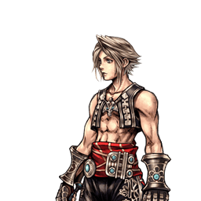

Final Fantasy XII
Vaan
Touche-à-tout du corps à corps et de la mi-distance, bâti sur le Switch
Position dans la méta
Tier B 25ᵉ sur 30 — tier list tournoi 2017 de dissidia.wiki (moitié valeurs de matchups, moitié avis de joueurs experts).
L'overview le décrit comme classé mid et low tier tout au long de l'histoire compétitive du jeu.
Vue d'ensemble
Vaan est un personnage de courte à moyenne portée disposant d'une grande variété de braveries. Grâce à sa mécanique unique de « Switch », chaque bravery existe en deux versions : la version Switch (SW), exécutée quand l'attaque n'a pas été utilisée précédemment, et la version On-hand (OH), exécutée quand il réutilise la même attaque ensuite.
C'est une arme à double tranchant : Vaan accède à des attaques aux propriétés souvent au-dessus de la moyenne, mais il doit s'engager à attaquer s'il veut disposer d'une bravery précise plus tard. Beaucoup de ses attaques ont un long startup ou une longue recovery et sont conçues pour des distances et des angles spécifiques ; la nécessité de whiffer découle donc autant de l'accessibilité de son répertoire que de la mécanique d'assist.
Cette nature de gameplay convient pourtant bien aux joueurs débutants et intermédiaires : sa diversité mécanique expose à de nombreux aspects de la prise de décision et des interactions de jeu. Peu de loadouts standards existent — chaque matchup peut exiger des combinaisons spécifiques — ce qui en fait un personnage stimulant à expérimenter. Il peut écraser les blocks, engager à mi-distance, contourner les projectiles, et possède même des combos infinis ; ses combos solo sont rares, mais les assists étendent nettement son potentiel. Malgré des multiplicateurs de dégâts relativement élevés, sa base ATK sous la moyenne limite ses dégâts sans gros investissement ; il scale bien avec l'investissement, sa mobilité est bonne dans l'ensemble et sa base DEF est au-dessus de la moyenne. Son EX intake est légèrement au-dessus de la moyenne, mais son EX Mode est l'un des plus décevants du jeu.
Historiquement classé mid et low tier en compétition, Vaan n'est pas réputé comme personnage de counterpick efficace, et optimiser son jeu demande un effort de spécialiste. Même à son meilleur, son gameplay n'est pas polarisant : il souffre d'un dilemme de trois slots de bravery, de frame data et de tracking souvent sous la moyenne, construit mal sa jauge d'assist et peine contre les command blocks conçus autour des attaques de priorité moyenne et haute. Les joueurs doivent faire des compromis et exploiter chaque mécanique, bizarrerie et stratégie disponibles — Vaan illustre peut-être vraiment l'adage « bon à tout, maître en rien ».
Forces
- Arsenal très varié via le Switch : des braveries aux propriétés souvent au-dessus de la moyenne pour la plupart des distances et des angles.
- Boîte à outils complète : il peut écraser les blocks, engager à mi-distance, contourner les projectiles, et possède même des combos infinis ; les assists étendent encore son potentiel de combo.
- Bonne mobilité globale et base DEF au-dessus de la moyenne.
- Scale bien avec l'investissement : multiplicateurs de dégâts relativement élevés et EX intake légèrement au-dessus de la moyenne.
- Diversité mécanique formatrice : un personnage pertinent pour les joueurs débutants et intermédiaires, compelling à expérimenter.
Faiblesses
- Le Switch force l'engagement : pour disposer d'une attaque précise plus tard, il faut attaquer (ou whiffer) maintenant.
- Beaucoup d'attaques à long startup ou longue recovery, avec des frame data et un tracking souvent sous la moyenne.
- Base ATK sous la moyenne : dégâts seulement moyens sans gros investissement.
- Dilemme des trois slots de bravery et peu de loadouts standards : chaque matchup peut exiger des combinaisons spécifiques.
- Construit mal la jauge d'assist et peine contre les command blocks conçus autour des priorités moyennes et hautes.
- L'un des EX Modes les plus décevants du jeu.
Stats & vitesses
| Nom | Vaan (ヴァン) |
|---|---|
| Jeu d'origine | Final Fantasy XII |
| ATK de base (LV100) | 109 (Low) |
| DEF de base (LV100) | 112 (High) |
| Vitesse de course | 6 (Good) |
| Vitesse de dash | 77F (Average / Good) |
| Vitesse de chute | 73F (Great) |
| Chute après esquive | 28 (Above Average) |
| BRV la plus rapide | 19F (Axe & Shield hand, Sword & Shield hand) |
| HP la plus rapide | 21F (Torrent, up) 45F (Cataclysm) |
| HP en 1 coup | Yes (Cataclysm & Windburst projectile) |
| HP links | No |
| Command block | Yes (Sword & Shield switch) |
| Armes | Parrying Weapons, all normal weapons except instruments |
| Armures | Shields, Bangles, Hats, Helms, Headbands, Clothing, Light Armor, Chestplates |
| Armes exclusives | Reks's Blade, Sword of Kings, Zodiac Blade |
| Camp | Cosmos |
| Doubleur (JP) | Kensho Ono |
| Doubleur (ENG) | Bobby Edner |
Point or : ce personnage · petits points : le reste du cast · trait violet : moyenne. Valeurs du wiki, plus bas = plus rapide ; le rang à droite se lit directement (1ᵉʳ = le plus rapide).
Coups
Barre plus courte = coup plus rapide. Startup en frames (60 i/s, données dissidia.wiki), priorité indiquée après la valeur. Les coups marqués ★ sont les plus rapides du kit — ce sont en général vos meilleurs outils de punish et de pression.
Braveries
Liste
Chaque bravery de Vaan a deux versions : Switch (SW) quand l'attaque n'a pas encore été utilisée (début de match compris), On Hand (OH) quand il réutilise la même attaque ensuite. Toutes existent au sol et en l'air.
Sword & Shield Block Mid / Melee Low
Attaque à l'épée et au bouclier de courte portée qui bloque pendant le Switch (Block 1~30F sur la version SW) : c'est le command block de Vaan. En EX Mode, la priorité de block passe de Block Mid à Block High, au même niveau que le Wrath de Cloud of Darkness ou le Protect Guard d'Exdeath : il fait stagger les attaques Melee Mid, mais Vaan stagger lui-même contre les attaques de haute priorité (HP attacks). La version OH est à égalité sa bravery la plus rapide (19 frames).
Switch (SW) Block Mid / Melee Low
| Dégâts de base | 30 |
|---|---|
| Startup | 39F (Block 1~30F) |
| Type | Physical |
| Priorité | Block Mid / Melee Low |
| EX Force | 60 |
| Effets | Chase, Block |
| Cancels | Dodge |
| CP (maîtrisé) | 30 (20) |
On Hand (OH) Melee Low
| Dégâts de base | 25 (5, 7, 13) |
|---|---|
| Startup | 19F |
| Type | Physical |
| Priorité | Melee Low |
| EX Force | 90 |
| Effets | Chase |
| Cancels | Dodge |
| CP (maîtrisé) | 30 (20) |
EX Mode Block High / Melee Low
| Dégâts de base | 30 |
|---|---|
| Startup | 39F (Block 1~30F) |
| Type | Physical |
| Priorité | Block High / Melee Low |
| EX Force | 60 |
| Effets | Chase, Block |
| Cancels | Dodge |
| CP (maîtrisé) | 30 (20) |
Axe & Shield Melee High
Coup de hache de courte portée qui brise la garde adverse pendant le Switch : la version SW est Melee High avec Wall Rush, la version OH une Melee Low rapide (19 frames, à égalité sa bravery la plus rapide). En EX Mode, la version gagne un follow-up supplémentaire.
Switch (SW) Melee High
| Dégâts de base | 30 |
|---|---|
| Startup | 33F |
| Type | Physical |
| Priorité | Melee High |
| EX Force | 0 |
| Effets | Wall Rush |
| Cancels | Dodge |
| CP (maîtrisé) | 30 (20) |
On Hand (OH) Melee Low
| Dégâts de base | 7~25 (1~2x2, 1~2x4, 13) |
|---|---|
| Startup | 19F |
| Type | Physical |
| Priorité | Melee Low |
| EX Force | 30 |
| Effets | Wall Rush |
| Cancels | Dodge |
| CP (maîtrisé) | 30 (20) |
EX Mode Melee High
| Dégâts de base | 29~45 (1~5x4, 25) |
|---|---|
| Startup | 33F |
| Type | Physical |
| Priorité | Melee High |
| EX Force | 30 |
| Effets | Wall Rush, extra follow-up |
| Cancels | Dodge |
| CP (maîtrisé) | 30 (20) |
Greatsword Melee Low Melee Mid (3rd hit / max charge)
L'une de ses braveries les plus fortes, à cheval entre courte et moyenne portée : initiateur rapproché, extension de combo, gap closer et punish d'esquive engagé (SW chargée). La version SW est son attaque la plus rapide (11 frames) ; chargée à fond, elle gagne en tracking, passe Melee Mid, et son multiplicateur dépasse celui du Bardiche de Garland — la hitbox initiale reste active pendant la majorité du déplacement, très bonne contre les esquives dans sa trajectoire, mais l'attaque tourne mal après la charge initiale. La version OH est un poke avançant correct, rapide à whiffer, dont le premier hit se confirme facilement en assist sans mur, avec un tracking rapproché trompeusement bon ; elle ne produit ni son ni effet visuel au démarrage, difficile à réagir visuellement. La version EX réduit seulement le temps de charge maximale. SW Greatsword sert aussi de follow-up en dodge cancel après SW Katana, SW Staff, SW Crossbow et Windburst. Populaire dans de nombreux matchups, comme Cecil, Cloud et Squall.
Switch (SW) Melee Low Melee Mid (3rd hit / max charge)
| Dégâts de base | 40 (10, 10, 20) |
|---|---|
| Startup | 11F / 43F (max charge) |
| Type | Physical |
| Priorité | Melee Low Melee Mid (3rd hit / max charge) |
| EX Force | 30 |
| Effets | Wall Rush |
| Cancels | Dodge |
| CP (maîtrisé) | 30 (20) |
On Hand (OH) Melee Low
| Dégâts de base | 30 (13, 17) |
|---|---|
| Startup | 23F |
| Type | Physical |
| Priorité | Melee Low |
| EX Force | 30 |
| Effets | Wall Rush |
| Cancels | Dodge |
| CP (maîtrisé) | 30 (20) |
EX Mode Melee Low Melee Mid (3rd hit / max charge)
| Dégâts de base | 40 (10, 10, 20) |
|---|---|
| Startup | 11F / 33F (max charge) |
| Type | Physical |
| Priorité | Melee Low Melee Mid (3rd hit / max charge) |
| EX Force | 30 |
| Effets | Wall Rush, faster charge |
| Cancels | Dodge |
| CP (maîtrisé) | 30 (20) |
Katana Melee Mid
Taillade au katana à mi-distance : la version SW (Melee Mid, Chase) monte en puissance avec un combo lent pendant le Switch et culmine à un multiplicateur de 50 ; la version OH est une Melee Low plus rapide (23 frames). Bon générateur d'EX Force (jusqu'à 90). En EX Mode, le timing du finisher est allongé.
Switch (SW) Melee Mid
| Dégâts de base | 50 (1 x 12, 30, 8) |
|---|---|
| Startup | 39F |
| Type | Physical |
| Priorité | Melee Mid |
| EX Force | 60 ~ 90 |
| Effets | Chase |
| Cancels | Dodge |
| CP (maîtrisé) | 30 (20) |
On Hand (OH) Melee Low
| Dégâts de base | 30 (9,1 x 4, 17) |
|---|---|
| Startup | 23F |
| Type | Physical |
| Priorité | Melee Low |
| EX Force | 90 |
| Effets | Chase |
| Cancels | Dodge |
| CP (maîtrisé) | 30 (20) |
EX Mode Melee Mid
| Dégâts de base | 50 (1 x 12, 30, 8) |
|---|---|
| Startup | 39F |
| Type | Physical |
| Priorité | Melee Mid |
| EX Force | 60 ~ 90 |
| Effets | Chase, longer finisher timing |
| Cancels | Dodge |
| CP (maîtrisé) | 30 (20) |
Spear Melee Mid
Coup de lance à mi-distance qui attire l'adversaire pendant le Switch (effet Absorb sur la version SW, Melee Mid) ; les deux versions provoquent un Wall Rush. En EX Mode, la version gagne une seconde salve de hits (multiplicateur 55).
Switch (SW) Melee Mid
| Dégâts de base | 35 (4 x 5, 15) |
|---|---|
| Startup | 23F |
| Type | Physical |
| Priorité | Melee Mid |
| EX Force | 15 |
| Effets | Wall Rush, Absorb |
| Cancels | Dodge |
| CP (maîtrisé) | 30 (20) |
On Hand (OH) Melee Low
| Dégâts de base | 28 (2 x 4, 7, 13) |
|---|---|
| Startup | 21F |
| Type | Physical |
| Priorité | Melee Low |
| EX Force | 30 |
| Effets | Wall Rush |
| Cancels | Dodge |
| CP (maîtrisé) | 30 (20) |
EX Mode Melee Mid
| Dégâts de base | 55 (4 x 5, 4 x 5, 15) |
|---|---|
| Startup | 23F |
| Type | Physical |
| Priorité | Melee Mid |
| EX Force | 24 |
| Effets | Wall Rush, Absorb |
| Cancels | Dodge |
| CP (maîtrisé) | 30 (20) |
Staff Melee Low
Coup de bâton à mi-distance qui génère énormément d'EX Force (108 à 150 selon la version, le record de son kit) avec effet Chase ; la version SW, magique, laisse Vaan libre de se déplacer.
Switch (SW) Melee Low
| Dégâts de base | 30 (1 x 8, 22) |
|---|---|
| Startup | 23F |
| Type | Magical |
| Priorité | Melee Low |
| EX Force | 108 |
| Effets | Chase |
| Cancels | Dodge |
| CP (maîtrisé) | 30 (20) |
On Hand (OH) Melee Low
| Dégâts de base | 20 (3 x 3, 11) |
|---|---|
| Startup | 21F |
| Type | Physical |
| Priorité | Melee Low |
| EX Force | 114 |
| Effets | Chase |
| Cancels | Dodge |
| CP (maîtrisé) | 30 (20) |
EX Mode Melee Low
| Dégâts de base | 38 (1 x 8, 1 x 8, 22) |
|---|---|
| Startup | 150 |
| Type | Magical |
| Priorité | Melee Low |
| EX Force | 150 |
| Effets | Chase |
| Cancels | Dodge |
| CP (maîtrisé) | 30 (20) |
Crossbow Ranged Low
Tir de bowgun à longue portée (Ranged Low, Chase) : maintenir le bouton sur la version SW déclenche un tir en rafale, jusqu'à 105 d'EX Force. La version OH est nettement plus faible (12 de multiplicateur, aucune EX Force). En EX Mode, la portée augmente. SW Crossbow fait partie des attaques annulables en dodge cancel vers SW Greatsword.
Switch (SW) Ranged Low
| Dégâts de base | 30 (1 x 15, 15) |
|---|---|
| Startup | 41F |
| Type | Physical |
| Priorité | Ranged Low |
| EX Force | max 105 |
| Effets | Chase |
| CP (maîtrisé) | 30 (20) |
On Hand (OH) Ranged Low
| Dégâts de base | 12 (4 x 3) |
|---|---|
| Startup | 31F |
| Type | Physical |
| Priorité | Ranged Low |
| EX Force | 0 |
| Effets | Chase |
| CP (maîtrisé) | 30 (20) |
EX Mode Ranged Low
| Dégâts de base | 30 (1 x 15, 15) |
|---|---|
| Startup | 41F |
| Type | Physical |
| Priorité | Ranged Low |
| EX Force | max 105 |
| Effets | Chase, increased range |
| CP (maîtrisé) | 30 (20) |
Rifle Ranged Low
Tir de fusil à longue portée avec Wall Rush : la version SW comporte une esquive pendant le Switch (Dodge 1~20F), la version OH sort en 29 frames. En EX Mode, une seconde salve double le multiplicateur.
Switch (SW) Ranged Low
| Dégâts de base | 18 (3 x 6) |
|---|---|
| Startup | 49F (Dodge 1~20F) |
| Type | Physical |
| Priorité | Ranged Low |
| EX Force | 0 |
| Effets | Wall Rush, Dodge |
| Cancels | Dodge |
| CP (maîtrisé) | 30 (20) |
On Hand (OH) Ranged Low
| Dégâts de base | 18 (3 x 6) |
|---|---|
| Startup | 29F |
| Type | Physical |
| Priorité | Ranged Low |
| EX Force | 0 |
| Effets | Wall rush |
| Cancels | Dodge |
| CP (maîtrisé) | 30 (20) |
EX Mode Ranged Low
| Dégâts de base | 36 (3 x 6, 3 x 6) |
|---|---|
| Startup | 49F (Dodge 1~20F) |
| Type | Physical |
| Priorité | Ranged Low |
| EX Force | 0 |
| Effets | Wall Rush, Dodge |
| Cancels | Dodge |
| CP (maîtrisé) | 30 (20) |
Attaques HP
Au sol
Torrent Ranged High
HP attack au sol à longue portée : des torrents d'eau tirés depuis un cercle magique, Ranged High avec Wall Rush. Sa composante « up » sort en 21 frames — la HP attack la plus rapide de son kit — contre 69 frames pour la version descendante.
| Dégâts de base | 2 [up], 2, 3, 3, [down] (10) |
|---|---|
| Startup | 21F (up) / 69F (down) |
| Type | Magical |
| Priorité | Ranged High |
| EX Force | 24 |
| Effets | Wall rush |
| CP (maîtrisé) | 40 (20) |
Cataclysm Melee High (close) / Ranged High (rocks)
HP attack au sol à mi-distance : invoque plusieurs rochers qui chargent l'adversaire, Melee High de près et Ranged High sur les rochers. C'est l'une de ses 1-hit HP (avec le projectile de Windburst).
| Startup | 45F |
|---|---|
| Priorité | Melee High (close) / Ranged High (rocks) |
| EX Force | 30~60 |
| CP (maîtrisé) | 40 (20) |
En l’air
Inferno Melee High
HP attack aérienne à mi-distance : Vaan concentre des flammes puis charge, avec un fort homing, Melee High et Wall Rush.
| Dégâts de base | 1 x 9 (9) |
|---|---|
| Startup | 51F |
| Type | Magical |
| Priorité | Melee High |
| EX Force | 3 per hit (27 max) |
| Effets | Wall rush |
| CP (maîtrisé) | 40 (20) |
Windburst Melee High (step) / Ranged High (wind)
HP attack aérienne à longue portée : génère une tornade qui aspire l'adversaire pendant un temps donné (effet Absorb), Melee High sur le pas d'ouverture et Ranged High sur le vent — le projectile sert de 1-hit HP. Annulable en dodge cancel vers SW Greatsword.
| Dégâts de base | 15 |
|---|---|
| Startup | 29F (step) / 99F (wind) |
| Type | Physical |
| Priorité | Melee High (step) / Ranged High (wind) |
| EX Force | 30 / 60 |
| Effets | Absorb |
| CP (maîtrisé) | 40 (20) |
EX Mode: Obtained all Licenses! & EX Burst
L'EX Mode « Obtained all Licenses! » confère Regen, Critical Boost, Free Switch et Zodiak. Free Switch (activable avec R + carré) permet de revenir aux attaques désarmées à tout moment : démarre à 1 frame, se termine à 31, annulable en esquive ou en attaque à 21 frames — c'est ce qui laisse Vaan réutiliser ses versions SW plus souvent et avec moins de risque. Zodiak, actif en permanence, augmente stats et capacités et renforce fortement les attaques : chaque version Switch d'une bravery gagne un bonus (portée accrue, invincibilité, charge plus courte ou follow-up supplémentaire).
L'overview tempère néanmoins : malgré ces effets, l'EX Mode de Vaan est considéré comme l'un des plus décevants du jeu.
EX Burst : « Quickening » : attaque imprégnée de Mist où l'on fait défiler les options avec R et où l'on valide avec X. Une méthode consistante : appuyer sur R, puis marteler X quelques fois, et répéter cette boucle trois fois par Quickening.
Mécanique unique
Le Switch : toutes les braveries de Vaan existent en deux versions. La version Switch (SW) s'exécute quand l'attaque n'a pas encore été utilisée — y compris en tout début de match ; la version On Hand (OH), quand il réutilise la même attaque ensuite. Les deux versions d'un même coup diffèrent en frame data, en priorité et en effets — le détail est dans les sous-fiches de chaque coup.
Tout le jeu de Vaan consiste à séquencer ses armes pour rester sur les bonnes versions au bon moment : les versions SW, plus lentes mais souvent assorties d'un block ou d'effets supplémentaires, ouvrent le jeu ; les versions OH, plus rapides, punissent — sa bravery la plus rapide (19 frames) est une version OH.
Plan de jeu & techniques avancées
Le jeu de Vaan s'organise autour du Switch : chaque bravery utilisée bascule vers sa version On-hand, et il faut « consommer » (souvent en whiffant) une attaque pour recharger sa version Switch, plus puissante. Le plan consiste donc à séquencer son arsenal : ouvrir avec les versions SW aux propriétés fortes (Sword & Shield qui bloque, Axe & Shield qui brise la garde, Greatsword 11 frames, Rifle avec esquive intégrée), puis exploiter les versions OH plus rapides — dont plusieurs, comme OH Greatsword, ne produisent aucun signal sonore ou visuel au démarrage et sont difficiles à réagir.
En neutral, Greatsword est le pivot : initiateur rapproché, gap closer, extension de combo et punish d'esquive en version SW chargée, avec un premier hit OH facilement confirmable en assist sans mur — précieux pour un personnage par ailleurs médiocre à construire la jauge d'assist. Katana, Spear et Staff couvrent la mi-distance (Staff générant énormément d'EX Force), Crossbow et Rifle la longue portée. Côté HP attacks, Torrent (21 frames sur la composante montante) et Cataclysm sont ses plus rapides ; Cataclysm et le projectile de Windburst servent de 1-hit HP.
Le build documenté illustre la répartition type : au sol Spear, Axe & Shield et Sword & Shield ; en l'air Katana, Greatsword et Rifle. Le dilemme des trois slots impose des compromis, et chaque matchup peut exiger des combinaisons spécifiques : peu de loadouts standards existent. En EX Mode, Free Switch lève temporairement la contrainte principale du personnage en redonnant accès aux versions SW à la demande, et Zodiak renforce toutes les versions Switch.
Techniques spécifiques
Dodge cancel > SW Greatsword
SW Greatsword peut être utilisée comme follow-up en dodge cancel après SW Katana, SW Staff, SW Crossbow et Windburst, ce qui relie ses outils de mi-distance et de zone à son attaque la plus rapide et la plus rentable.
Routes de combo solo recensées
Le relevé décrit l'un des kits de combo les plus fournis et praticables du cast, avec trois infinis (un seul réellement jouable). Routes : Katana SW > dodge cancel > Greatsword SW ; Staff SW > DC > Greatsword SW ou Staff non-SW ; Crossbow SW > DC > Staff, Spear ou Greatsword SW ; Crossbow SW en bord de portée d'esquive (équipement Adamant) > DC > Windburst ; Windburst > DC > Staff SW vers la tornade, Spear SW ou Greatsword SW ; Windburst posé > hit de Windburst > Crossbow SW ou Greatsword SW chargé ; Windburst posé > Crossbow SW sans maintien > hit de Windburst > Chase HP ; Axe & Shield non-SW (2 coups) > DC > landing lag > Greatsword SW, Axe & Shield non-SW ou Windburst. SW désigne la version Switch d'une arme (changement d'arme), non-SW la version arme en main (On Hand).
Sources : pastebin.com/8FWDXjvJ
Empty chase vers reset de jauge d'assist
D'après le relevé des empty chases, Crossbow (non-SW) et Sword & Shield (non-SW, extrêmement serré) offrent un empty chase vers reset de la jauge d'assist ; Sword & Shield (SW) et Katana (non-SW) échouent de justesse.
Sources : pastebin.com/dKSWgUQ6
Techniques universelles (blodge, dash feint, lock off, dodge punishment) : voir la page Techniques & glitches.
Matchups
La page matchups du wiki est un stub, mais les sources donnent quelques repères : Vaan n'est pas réputé comme counterpick efficace, et chaque matchup peut exiger des combinaisons d'attaques spécifiques plutôt qu'un loadout standard. Greatsword est citée comme choix populaire dans de nombreux matchups, notamment Cecil, Cloud et Squall. À l'inverse, il peine structurellement contre les command blocks conçus autour des attaques de priorité moyenne et haute.
Vidéos de matchs : Replay Theater — matchs de Vaan.
Builds
Le build documenté, « Damage (Seal of Lufenia) », mise sur l'effet spécial Seal of Lufenia avec un Max Booster de x4.4 : arme exclusive Zodiac Blade et set Lufenian (Dirk, Headband, Vest), accessoires orientés boosters conditionnels (Muscle Belt, Battle Hammer, Summon Unused, Pre-EX Mode, Pre-EX Revenge, deux After 30 Seconds, Opponent Summon Unused, Glutton, First to Victory), assist Kuja et Rubicante en summon. Il s'appuie sur l'Equip Glitch (le coût total en CP le suppose réalisé) et recommande l'extra ability Master Guardsman pour +1000 HP.
Le loadout d'attaques associé : Spear, Axe & Shield et Sword & Shield au sol ; Katana, Greatsword et Rifle en l'air.
| Stats | |
|---|---|
| HP | 11299 |
| CP | 450 |
| BRV | 957 |
| ATK | 178 |
| DEF | 184 |
| LUK | 60 |
| Max Booster | x4.4 |
| Equipment | |
|---|---|
| Assist | Kuja |
| Weapon | Zodiac Blade |
| Hand | Lufenian Dirk |
| Head | Lufenian Headband |
| Body | Lufenian Vest |
| Accessory 1 | Muscle Belt |
| Accessory 2 | Battle Hammer |
| Accessory 3 | Summon Unused |
| Accessory 4 | Pre-EX Mode |
| Accessory 5 | Pre-EX Revenge |
| Accessory 6 | After 30 Seconds |
| Accessory 7 | After 30 Seconds |
| Accessory 8 | Opponent Summon Unused |
| Accessory 9 | Glutton |
| Accessory 10 | First to Victory |
| Summon | Rubicante |
| Au sol | En l’air |
|---|---|
| Spear | Katana |
| Axe & Shield | Greatsword |
| Sword & Shield | Rifle |
Loadout du build « Damage (Seal of Lufenia) », tel que documenté par le wiki. Seules les braveries sont spécifiées : le choix des attaques HP n'est pas documenté pour ce build.
Le second build (« Build #2 ») est un gabarit vide dans les données sources.
Synergies d'assist
Vaan en tant qu'assist
En tant qu'assist, Vaan est classé dans le tier Mid de la tier list assist de Muggshotter. Les sources de sa page ne détaillent pas son usage en assist au-delà de ce classement.
Assists recommandées
- Kuja — Cité par la page parmi les assists qui fonctionnent bien avec Vaan ; c'est aussi l'assist retenue dans le build Seal of Lufenia documenté, et OH Greatsword se confirme facilement en assist sans mur.
- Aerith — Citée par la page parmi les assists qui fonctionnent bien avec Vaan, sans plus de détail dans les sources.
- Jecht — Cité par la page parmi les assists qui fonctionnent bien avec Vaan, sans plus de détail dans les sources.
Tech communautaire
Dissdia 012 vaan infinite combo tutorial. 2011
Tutoriel d'époque (avril 2011) d'un combo infini découvert par accident, exigeant Staff équipé en l'air — l'une des rares traces documentées des « combos infinis » évoqués par l'overview.
Dissidia 012: Final Fantasy - Vaan Combo Exhibition 2011
Exhibition de combos par Muramishi (juin 2011) : Axe & Shield ou Sword & Shield utilisées dans leur version On-hand produisent un combo difficile mais vraisemblablement infini.
Liste de combos solo de tout le cast (Eddiegames) 2022
Relevé communautaire des routes de combo solo des 31 personnages, rédigé par Eddiegames sur le Discord DISSIDIA et publié en pastebin (dernière mise à jour décembre 2022). Vaan y est décrit comme l'un des kits de combo les plus fournis du cast, avec trois infinis dont un praticable.
Liste des empty chases menant à un reset de jauge d'assist (Eddiegames)
Relevé personnage par personnage des coups dont le hit stun permet un empty chase (un chase initié sans rien y exécuter) suivi d'un reset de la jauge d'assist adverse. Le détail pour ce personnage est repris dans les techniques spécifiques.
Sources
- https://dissidia.wiki/Vaan_(Dissidia_012)
- https://www.youtube.com/watch?v=mDG7aVLYZUM
- https://www.youtube.com/watch?v=LOJRXYv1Cdc
- https://pastebin.com/8FWDXjvJ
- https://pastebin.com/dKSWgUQ6
- https://dissidia.wiki/Tier_List_(Dissidia_012)
- https://dissidia.wiki/Tier_List_(Assist)
Limites connues
- La page matchups du wiki est un stub : seuls les repères de l'overview et de la note de Greatsword (Cecil, Cloud, Squall) ont pu être repris.
- Aucune section combos renseignée (sous-section Solo vide) : les « combos infinis » mentionnés dans l'overview ne sont détaillés nulle part.
- Pas de section « Unique Mechanics » documentée : le Switch n'est décrit que dans l'overview et l'intro des braveries, d'où uniqueMechanics laissé à null et la mécanique traitée dans overview et gameplan.
- Notes d'usage détaillées absentes pour la plupart des coups : seuls Sword & Shield (version EX) et Greatsword ont de vraies notes ; le reste se limite aux descriptions du jeu et aux frame data.
- Le second build (« Build #2 ») est un gabarit vide ; valeurs d'assist gain absentes des tableaux de coups.
- Section References vide et aucune mention communautaire datée : communityTech laissé vide.
- Le relevé d'empty chases de la communauté n'est pas daté (le relevé de combos solo qui l'accompagne l'est de décembre 2022) : son état de fraîcheur ne peut pas être établi.